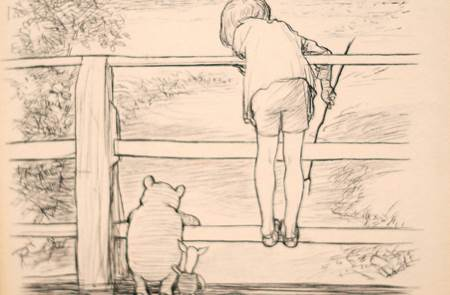
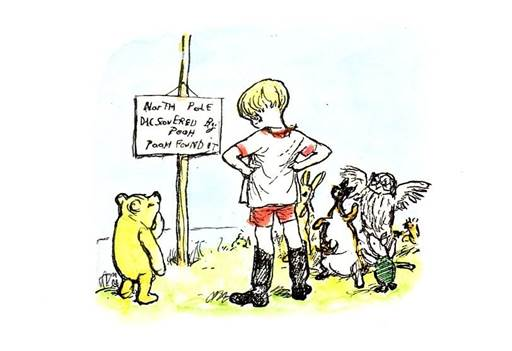
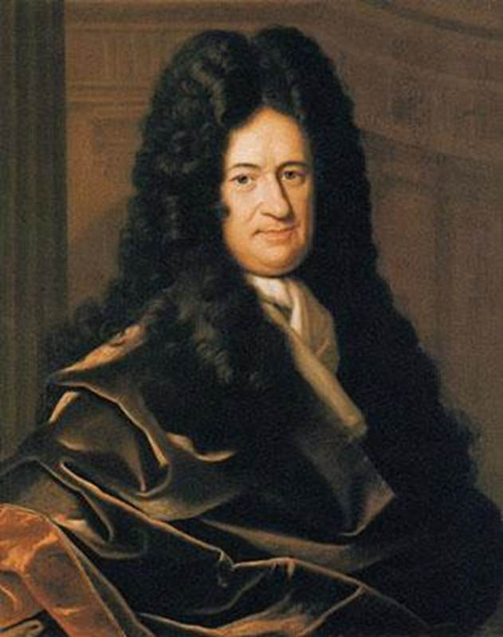

目录
1. 出典：
Ø 棍子与最终场景
Ø 前定和谐
2. 剧情：
Ø 剧情简介
1. 出典：
Poohstick，“丢棍子”游戏，出自《小熊维尼》。 这是一个非常简单的游戏，可以在自来水上的任何一座桥上玩； 每位玩家在桥的上游投下一根木棍，赢家是首先出现在木桥下游的木棍。
另外，罗宾曾经带领动物们去北极探险，在探险结束前发现了北极的位置，然后维尼熊把一个杆子插在了那里，上面挂着“北极”的字样。
尽管出现了很多小熊维尼的出典，但从总体上看，第七章的一系列场景还是纳尼亚传奇故事中结局场景的象征性重复，在《最后的战役》中，七位主人公在最后聚集一堂，进入了真正的纳尼亚。

Figure 1. “丢棍子”游戏插画

Figure 2. 北极探险的插画
德国哲学家莱布尼茨认为﹐万物由“单子”构成﹐而单子因其绝对单纯而无部分﹐没有“窗子”可供出入﹐因而彼此不能互相影响﹑互相作用。但是这一理论却不能解释宇宙万物之间是如何互相协调﹐构成一个和谐的总体的。
他因而提出了前定和谐的理论：上帝在创造世界时就使每一单子具有这样的本性﹐在此后的全部发展中﹐每一个单子都各自遵循自身的规律发展变化﹐又自然地与其他一切单子的发展变化保持协调﹐犹如一个乐队的每一乐师各自演奏作曲家事先为之谱就的旋律﹐而全乐队就奏出和谐的交响曲。他还用“前定和谐”的学说来说明心身关系﹐将心身比作两具制造得极精密的时钟﹐认为它们各走各的而彼此自然地保持一致。他还以此作为论证万能上帝存在的论据之一。

Figure 2. 莱布尼茨肖像
经过了数十年的时间，新宿在宫乃伽子的死亡，和雨森的破碎之后依然存在着。
刈谷还是工作狂模式，一天要见五个人，日程非常紧凑，但是她还是抽出时间绕道去了新宿，在路上见到了已经成为了老人的灰流。
刈谷提到了黛因为抗衰老方面的贡献拿了诺贝尔奖，她自己也因此没有特别显老。在交谈中，她借九月的死，和这都是一场梦，来劝说灰流放弃再寻找森林，但是被他嘲讽。她惊讶的发现灰流虽然变成了老人，但是他的意志比过去更强。
灰流跟刈谷说谜语还在继续，他把搜集到的雨森的故事碎片给了刈谷，他继续去寻找活的碎片。刈谷在繁忙的工作中抽空把灰流的全部手稿记录下来，她发现诗歌中是非常轻松的内容，而并没有打算消除苦恼和重压的沉闷感。
灰流在找到最后一个碎片之后，突然心脏病发作，然后森林降临了，他遇到了爱丽丝。在两人的一段对话之后（详情见下一章），灰流决意在下一个世界继续。然后罗宾、维尼熊、刈谷、黛、九月纷纷加入，灰流讲述了新的故事。在释放了最后一块碎片之后，雨森复活，灰流给予了她新的名字，两人H之后，在所有森林角色的簇拥下迈向终章。